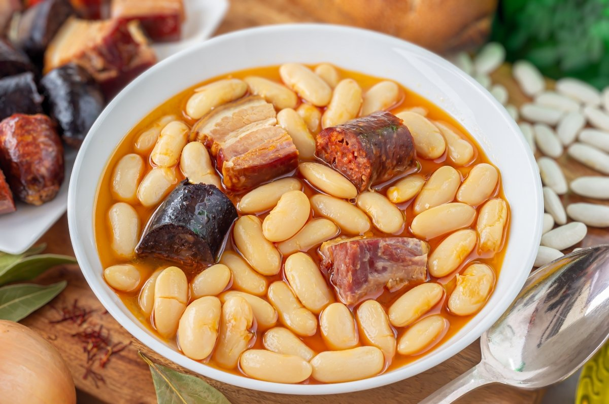

Sabores de San Martín
La gastronomía de San Martín del Rey Aurelio, como la del resto de Asturias, es robusta y sabrosa, pensada para reponer fuerzas tras las duras jornadas de trabajo en la mina o en el campo. Platos contundentes que aprovechan los productos de la huerta, la ganadería y los montes asturianos.

Fabada asturiana, plato emblemático de la gastronomía local
Platos principales
Entre los platos más destacados de la cocina de San Martín del Rey Aurelio encontramos:
Los favoritos locales (por popularidad)
- Fabada asturiana - El plato más representativo, elaborado con fabes (alubias blancas), chorizo, morcilla y tocino
- Pote asturiano - Guiso tradicional de berzas, patatas, fabes y compango (embutidos y carnes de cerdo)
- Callos a la asturiana - Preparados con tripas de ternera, chorizo y pimentón
- Cachopo - Filete de ternera relleno de jamón y queso, empanado y frito
- Arroz con leche - Postre típico con canela y limón
Productos de temporada
- Primavera:
- Verdinas con marisco
- Sopa de trucha
- Cordero a la estaca
- Verano:
- Tortos con picadillo
- Boroña preñada
- Arándanos silvestres
- Otoño:
- Setas de temporada
- Guisos de caza
- Castañas asadas
- Invierno:
- Fabada completa
- Caldereta de cordero
- Compango casero
Glosario gastronómico
- Fabes
- Alubias blancas de gran tamaño, muy apreciadas por su textura cremosa y sabor suave. Son la base de la fabada.
- Compango
- Conjunto de embutidos y carnes curadas que acompañan a las fabes en la fabada, típicamente incluye chorizo, morcilla y tocino.
- Sidra
- Bebida alcohólica fermentada a partir del jugo de manzana. En Asturias se sirve "escanciada", vertiendo el líquido desde altura en el vaso para conseguir que se oxigene.
- Tortos
- Tortitas elaboradas con harina de maíz que se fríen y se sirven con diversos acompañamientos, como picadillo de chorizo o queso cabrales.
- Boroña
- Pan tradicional elaborado con harina de maíz. La "boroña preñada" va rellena de chorizo, tocino y otros embutidos.
Restaurantes recomendados
Estos son algunos de los mejores lugares para degustar la gastronomía local:
| Nombre | Especialidad |
|---|---|
| Casa Manolín | Fabada tradicional y cachopos |
| La Mina | Pote asturiano y caldereta |
| Sidrería El Madreñeru | Tabla de quesos asturianos y sidra natural |
| El Rincón del Nalón | Guisos de caza y postres caseros |
Proceso de elaboración de la fabada
La fabada es uno de los platos más emblemáticos. A continuación puedes ver el proceso de elaboración: